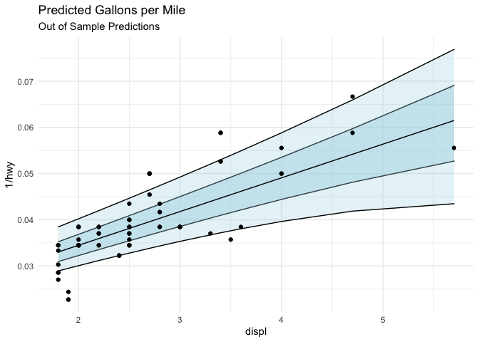
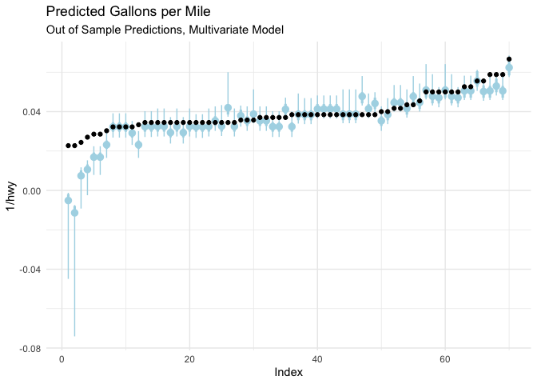

This is an R package for estimating quantile regression coefficients via the quantile spacing method, as described in the paper Quantile Spacings: A Simple Method for the Joint Estimation of Multiple Quantiles Without Crossing, Schmidt & Zhu.
The package allows users to fit quantile regressions and predictive distributions in a manner which avoids the quantile crossing problem. Fitted quantiles are guaranteed to be positive, because instead of directly estimating each quantile, the package will estimate the quantile effect on the log of the residuals with the correct corresponding sign.
In other words, imagine we estimate the median quantile for the data. Now we are interested in the 75th percentile. But we don’t want our quantiles to cross, which they are guaranteed to do in a non-trivial linear model (if the lines aren’t parallel, they will cross). To avoid this problem, the package take the log of the residuals relative to the median, and estimates a linear quantile regression on that quantity. The exponential model guarantees that the fitted quantile will have a non-negative difference vs. the median. You can translate the spacing back to a fitted quantile by taking the spacing predicted by the model, exponentiating, and adding back to the median.
The package also contains utilities for interpolating the density implied by the fitted quantiles. It does this in two steps–first it takes the highest and lowest fitted quantiles (0.95 and 0.05 by default) and uses a parametric assumption to fit the tails (gaussian by default), and then uses cubic splines to interpolate the fitted quantiles, giving a continuous predictive distribution.
The package is flexible, and works with any number of algorithms. It contains specialized methods for large-scale data, which use a smoothed approximation of the quantile loss function, combined with accelerated gradient descent, to estimate models at scales beyond the scope of traditional methods.
Installation
You’ll need R installed on your computer run the package. To install, the easiest method is to run
which requires the remotes package. quantspace also has some code which must be compiled.
Compiling on Windows
On windows that requires the installation of Rtools. For versions of R >= 4.0, you must use rtools40, and the older rtools for versions before 4.0.
Compiling on Mac
On a mac, you will require a C++ compiler, a gfortran binary and the like. While you can install these things via terminal + homebrew, the easiest way is to use the toolchain installer.
Compiling on Linux
On most linux distributions, you shouldn’t have to do anything special. You will still need a C++ compiler installed, but usually something like g++ is already available. On some Redhat linux server systems you will need to enable developer tools for your session before building. You can do this like so:
- Open a terminal window
-
scl enable devtoolset-x bashwherexis replaced with the version of devtools available to your redhat system - Boot up R and install the package
Performance benefits for agd
One of the algorithms (agd) available for fitting quantile regressions in the quantspace package uses the Armadillo C++ library for linear algebra. This library is able to leverage high-speed linear algebra packages such as openblas or the Intel MKL libraries.
Basic Usage
Say we want to run a quantile regression. The easiest way to do this is to use the qs function.
library(quantspace)
#> Loaded quantspace v0.1, using 6 cores for bootstrap sampling (see ?getCores).
#> Bug reports: github.com/be-green/quantspace/issues
library(ggplot2)
data(mpg)
est <- qs(1/hwy ~ displ,
data = head(mpg, 190))If we print our estimate, we’ll see the baseline coefficients (in this case the median is chosen as the central quantile), and then the spacings coefficients.
est
#> Baseline Coefficients:
#> Variable Quantile Coefficient SE
#> 1 (Intercept) 0.5 0.019890 0.0013340
#> 2 displ 0.5 0.007298 0.0004935
#>
#> Spacings Coefficients:
#> Variable Quantile Coefficient Standard.Error
#> 1 (Intercept) 0.10 -6.8980 0.9711
#> 2 displ 0.10 0.3881 0.2463
#> 3 (Intercept) 0.25 -6.8500 0.4917
#> 4 displ 0.25 0.3711 0.1228
#> 5 (Intercept) 0.75 -6.6770 0.4730
#> 6 displ 0.75 0.3151 0.1240
#> 7 (Intercept) 0.90 -6.1480 1.0420
#> 8 displ 0.90 0.2271 0.2829Suppose we want to see how good our fit is? We might want out of sample predictive tests. To do this, we simply run
Let’s plot some of this stuff to see how it looks!
library(ggplot2)
plot_data <- data.frame(tail(mpg, 70),
oos_pred)
ggplot(plot_data,
aes(x = displ, y = 1/hwy, ymin = `X0.25`, ymax = `X0.75`)) +
geom_ribbon(fill = "lightblue", alpha = 0.5, color = "black") +
geom_ribbon(aes(ymin = `X0.1`, ymax = `X0.9`),
fill = "lightblue", alpha = 0.3, color = "black") +
geom_point() +
geom_line(aes(y = `X0.5`), color = "black") +
theme_minimal() +
ggtitle("Predicted Gallons per Mile",
subtitle = "Out of Sample Predictions")
Let’s try a multivariate model, with multiple X variables. To make the predictions easier to see, I’m going to sort the true values, and plot our predicted quantiles as point-ranges, with the fatter range representing the 50% interval, and the thin one representing the 80% interval.
est <- qs(1/hwy ~ displ + cty,
data = head(mpg, 190))
oos_pred <- predict(est, newdata = tail(mpg, 70))
plot_data <- data.frame(tail(mpg, 70),
oos_pred)
plot_data <- plot_data[order(-plot_data$hwy),]
plot_data$Index <- 1:nrow(plot_data)
ggplot(plot_data,
aes(x = Index, y = 1/hwy, ymin = `X0.25`, ymax = `X0.75`)) +
geom_pointrange(aes(y = `X0.5`), color = "lightblue", size = 1.1,
fatten = 1) +
geom_pointrange(aes(y = `X0.5`, ymin = `X0.1`, ymax = `X0.9`),
color = "lightblue") +
geom_point() +
theme_minimal() +
ggtitle("Predicted Gallons per Mile",
subtitle = "Out of Sample Predictions, Multivariate Model")
Looks like we are missing some aspect of the problem for the lowest gallons-per-mile of car–perhaps we need to include an additional covariate. This type of model diagnostic is helpful, since the 80% interval for the fitted quantile should contain the observed value 80% of the time. If that’s happening not-at-random, or not happening it might be time to check your model.
Distributional Effects
What if we want to interpolate the fitted quantiles? For example, a full changes-in-changes difference in difference model involves the cumulative distribution function of the treated vs. the counterfactual predicted by the control group. We can do that by interpolating the fitted distributions for each group. Or maybe you just want a full predictive density to predict with/evaluate/sample from.
Let’s start with the fitted model above. To interpolate the fitted quantiles, all you need to do is run the following.
de <- distributional_effects(est)By default this estimates the conditional distribution at the average level of the covariates, but you can specify the newdata argument, which will compute the density functions for the levels of the data you provide.
Now de is an object of class “distributional_effects” which has associated plotting methods. I think that a predict interface is going to be on the roadmap for future releases since it will be relatively easy to program.
The object itself is a list of 4 functions corresponding to the pdf, the cdf, the quantile function, and a random number generator which simulates from the fitted density. Let’s draw 10 random numbers from our fitted density.
de$r(10)
#> [1] 0.05397541 0.04655421 0.04505485 0.04704032 0.05438701 0.04198281
#> [7] 0.04158249 0.04753504 0.04674888 0.04402587